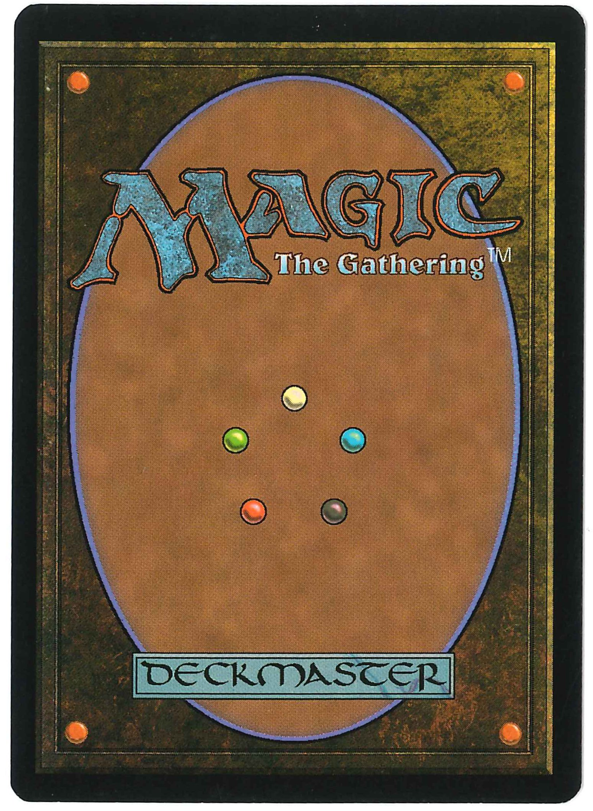

<!doctype html>
<html>
  <head>
    <meta charset="utf-8">
    <meta name="viewport" content="width=device-width, initial-scale=1.0, maximum-scale=1.0, user-scalable=no">

    <title>reveal.js</title>

    <link rel="stylesheet" href="css/reveal.css">
    <link rel="stylesheet" href="css/theme/black.css">

    <!-- Theme used for syntax highlighting of code -->
    <link rel="stylesheet" href="lib/css/zenburn.css">

    <!-- Printing and PDF exports -->
    <script>
      var link = document.createElement( 'link' );
      link.rel = 'stylesheet';
      link.type = 'text/css';
      link.href = window.location.search.match( /print-pdf/gi ) ? 'css/print/pdf.css' : 'css/print/paper.css';
      document.getElementsByTagName( 'head' )[0].appendChild( link );
    </script>

    <style>
      .img-right + p img {
        padding-left: 50px;
        float: right;
        border: none;
        background: none;
      }
    </style>
  </head>
  <body>
    <div class="reveal">
      <div class="slides">
        <section data-markdown data-separator="^\n---\n$" data-separator-vertical="^\n>>>\n$">
          <script type="text/template">

# C++17 の新機能

2018/04/07 齋藤 昂也

---

## 自己紹介

<div class="img-right"></div>


- 齋藤 昂也（さいとう たかや）
- twitter: @SubaruG
- blog: http://d.hatena.ne.jp/gintenlabo/
- 言語： C++, Python, Lua, Haskell
- 趣味： ピアノ, Magic: The Gathering

---

## C++17 とは

- 2017年に制定されたC++の最新規格
- コア言語・ライブラリに多くの新機能
- 詳しくは ↓ の本を参考


---

## コア言語

---

## 構造化束縛

用途： タプルを分解したい

>>>

## 構造化束縛

C++17 以前：

```c++
std::tuple<int, double, std::string> f() {
  return std::make_tuple(42, 3.14, "hello");
}

int main() {
  int i;
  double d;
  std::string s;

  std::tie(i, d, s) = f();
}
```

>>>

## 構造化束縛

C++17：

```c++
std::tuple<int, double, std::string> f() {
  return std::make_tuple(42, 3.14, "hello");
}

int main() {
  auto [i, d, s] = f();
}
```

>>>

## 構造化束縛

C++17 以前：

```c++
int main() {
  std::map<std::string, int> m = {
    {"a", 1},
    {"b", 2}
  };
  for (auto& p : m) {
    p.second *= 2;
  }
  for (const auto& p : m) {
    std::cout << p.first << ": " << p.second << std::endl;
  }
}
```

>>>

## 構造化束縛

C++17：

```c++
int main() {
  std::map<std::string, int> m = {
    {"a", 1},
    {"b", 2}
  };
  for (auto& [key, value] : m) {
    value *= 2;
  }
  for (const auto& [key, value] : m) {
    std::cout << key << ": " << value << std::endl;
  }
}
```

>>>

## 構造化束縛

- tuple だけでなく様々なクラスで使用可能
- ネストすることは不可能
- 不要変数を指定することは不可能

---

## 初期化文付き条件文

```c++
if (int x = some_function(); x % 2 == 0) {
  // do something...
}
switch (int x = some_function(); x) {
  case 1:
    // do something...
    break;
}
```

>>>

## 初期化文付き条件文

- 変数のスコープは if や switch の中だけになる
- else の中でも使用可能
- if や switch を抜けると変数は破棄される

---

## クラステンプレートの型推論

```c++
// vec は std::vector<int> と推論される
std::vector vec = {1, 2, 3, 4, 5};

std::mutex m;
std::lock_guard gd(m); // std::lock_guard<std::mutex> と推論される
```

>>>

## クラステンプレートの型推論

- 推論できるのはコンストラクタを与えられた場合のみ
- 自作クラスでも型推論可能（推定ガイドという機能を使う）

---

## RVO の強化

```c++
struct Foo {
  // Fooはコピーもムーブもできない
  Foo() = default;
  Foo(const Foo&) = delete;
  Foo(Foo&&) = delete;
};

Foo foo()
{
  // オブジェクトを生成して、「そのまま」返す
  return Foo();
}

auto y = foo(); // OK
```

---

## ネストされた名前空間

C++17以前：

```c++
namespace A {
  namespace B {
    namespace C {
      // A::B::C に属するものをここに書く
    }
  }
}
```

>>>

## ネストされた名前空間

C++17：

```c++
namespace A::B::C {
  // A::B::C に属するものをここに書く
}
```

---

## その他（説明省略）

- トライグラフの削除
- 16進数浮動小数点リテラル
- UTF-8 文字リテラル
- fold式
- if constexpr
- constexpr ラムダ式
- ラムダ式の *this キャプチャ

>>>

## その他（説明省略）

- 文字列なし static_assert
- inline 変数
- [[fallthrough]] 属性
- [[nodiscard]] 属性
- [[maybe_unused]] 属性
- 可変長 using 宣言
- バイトを表現する型 std::byte

---

## ライブラリ

---

## std::optional

値が入っているもしれないし、ないかもしれないクラス

>>>

## std::optional

```c++
std::optional<std::string> my_getline(std::istream& is) {
  std::string line;
  if (std::getline(is, line)) {
    return std::move(line);
  }
  return std::nullopt;
}

int main() {
  const auto line = my_getline(std::cin);
  if (line) {
    std::cout << *line << std::endl;
  } else {
    std::cout << "行を取得できませんでした。\n";
  }
}
```

>>>

## std::optional

- デフォルト構築した場合と std::nullopt から変換した場合は空になる
- そうでない場合は与えられた値をコピーして格納する
- アクセスはポインタに似た構文を使う
- std::in_place_type を使うことでオブジェクトを直接構築可能
- std::make_optional なんてのもある

---

## std::any

（コピーできるものなら）なんでも格納できるクラス

>>>

## std::any

```c++
std::any x;
x = 42;
std::cout << std::any_cast<int>(x) << std::endl;
x = "hoge"s;
std::cout << std::any_cast<std::string>(x) << std::endl;
```

>>>

## std::any

- コピー可能な型ならなんでも格納可能
- 値を取り出す時には std::any_cast で型を具体的に指定する必要あり
- 格納されうる型が限定されてる場合は後述の std::variant を使うほうがいい

---

## std::variant

型安全 union

>>>

## std::variant

```c++
std::variant<int, std::string> v;
v = 42;
std::cout << std::get<int>(v) << std::endl;
v = "hoge"s;
std::cout << std::get<std::string>(v) << std::endl;
```

>>>

## std::variant

- std::any と比較して、格納されうる型が決まっているので効率がいい
- 中にどの型の値が入っているかも問い合わせ可能
- std::visit という便利機能がある

---

## std::string_view

文字列への参照を統一的に扱うクラス

>>>

## std::string_view

```c++
std::size_t count_a(std::string_view str) {
  std::size_t count = 0;
  for (char x : str) {
    if (x == 'a') {
      ++count;
    }
  }
  return count;
}

count_a("abcdefg"); // OK
std::string s = "aaa";
count_a(s); // OK
```

>>>

## std::string_view

- find や remove_prefix 等の様々な便利機能あり
- あくまで文字列への「参照」であることに注意

---

## 並列アルゴリズム

並列実行ポリシーを引数に渡すことで <algorithm> の各関数を並列化

>>>

## 並列アルゴリズム

```c++
std::vector v = {1, 2, 3, 4, 5};
std::atomic<int> sum{0};

std::for_each(std::execution::par, v.begin(), v.end(), [&] (int x) {
  sum += x;
})
```

>>>

## 並列アルゴリズム

- ちゃんと動作させるには条件が結構キツいので、半端な知識で使用しないこと！

---

## ファイルシステム

プラットホーム非依存のファイルシステムライブラリ

>>>

## ファイルシステム

（例）カレントディレクトリのファイル一覧を表示：

```c++
using namespace std::filesystem;
path dir = current_path();
for (const auto& p : directory_iterator(dir)) {
  std::cout << p << std::endl;
}
```

>>>

## ファイルシステム

- ファイルの削除やシンボリックリンクなど、様々な機能がある
- 文字コード周りが結構面倒なので調べて使うこと

---

## その他（説明省略）

- std::sample
- try_emplace, insert_or_assign
- std::gcd, std::lcm
- std::as_const
- std::apply, std::make_from_tuple

---

## 終わり

ご清聴ありがとうございました

---

# おまけ

---

## Magic: The Gathering のススメ



>>>

## Magic: The Gathering のススメ

- 世界初の TCG （トレーディングカードゲーム）
- 豊富なカード、濃厚な世界観
- プレイヤーはプレインズウォーカー（様々な次元を渡り歩く魔法使い）となり、他のプレインズウォーカーと対決する
- （基本的には）相手の20点のライフを先にゼロにした方が勝ち

---

## 遊び方（フォーマット）

- 主として構築とリミテッドに分けられる
- 構築は自分のデッキを持ち寄って遊ぶ
- リミテッドはその場でパックを開けてデッキを組んで遊ぶ

---

## スタンダード

- ごく最近に発売されたエキスパンションのみ使用できる
- 一年に一回、ローテーション（昔のカードが使えなくなること）が発生
- カードプールが狭い＝覚えるべきことが少ないため、新規参入が容易
- 一方で、競技要素の高い、ガチ目のフォーマットでもある
- 予算はおおよそ 1万〜5万 （ガチ目のデッキを組む場合）

---

## モダン

- ある程度 新しめ（2003年7月〜）のカードが使用できる
- ローテーションは無い
- 禁止カードでバランスを取っているため、禁止カードが多い
- いろんなデッキが存在している
- 予算はおおよそ 5万〜10万 （土地を妥協しない場合）

---

## レガシー

- 禁止されていない限り、発売された殆ど全てのカードが使用できる
- ローテーションは無い
- 禁止カードは存在するが、モダンより禁止基準はゆるい
- 過去の強力カードが使えるのが魅力
- 予算はおおよそ 20万〜40万 （ガチ目で組む場合）

---

## シールド

- ここからリミテッド
- パックを6つ開けて、出てきたカード＋基本土地のみで40枚以上のデッキを組む
- 運要素が大きいので、初心者でも強いカードを引ければ勝てるのが魅力
- 予算は（最新エキスパンションのパックを使うなら） 2000円弱

---

## ブースタードラフト

- パックを開けて、その中からカードを1枚選んでピック→残りは隣の人に流す、その後 流れてきたカードからカードを1枚選んでピック→残りは隣の人に流す、を3パック繰り返し、ピックしたカード＋基本土地のみで40枚以上のデッキを組む
- シールドより戦略性が高い
- 参加者がたくさん必要（理想は8人、最低でも4人）
- 予算は（最新エキスパンションのパックを使うなら） 1000円弱

---

- ティーチング制度がしっかりしてるので参入は容易
- 最新エキスパンション「ドミナリア」 4/27 発売予定！
- それに伴いプレリリースイベントが 4/21,22 に開催予定（シールド）
- みんなも M:tG 、しよう！

---

ありがとうございました

          </script>
        </section>
      </div>
    </div>

    <script src="lib/js/head.min.js"></script>
    <script src="js/reveal.js"></script>

    <script>
      // More info about config & dependencies:
      // - https://github.com/hakimel/reveal.js#configuration
      // - https://github.com/hakimel/reveal.js#dependencies
      Reveal.initialize({
        dependencies: [
          { src: 'plugin/markdown/marked.js' },
          { src: 'plugin/markdown/markdown.js' },
          { src: 'plugin/notes/notes.js', async: true },
          { src: 'plugin/highlight/highlight.js', async: true, callback: function() { hljs.initHighlightingOnLoad(); } }
        ]
      });
    </script>
  </body>
</html>
